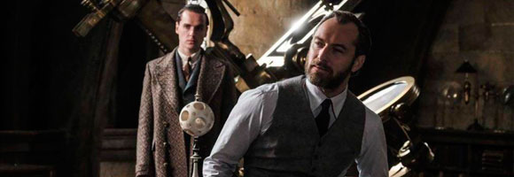
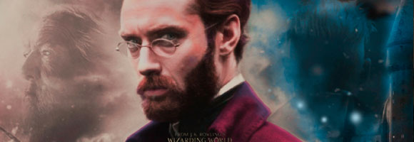

La reaccion de los fans al hecho de que Dumbledore no sea abiertamente gay
Animales fantásticos: Los crímenes de Grindelwald llega a los cines españoles el 16 de noviembre y, aunque aún no se ha difundido ningún tráiler, poco a poco vamos conociendo más detalles de la cinta dirigida por David Yates. Tras presentar a los personajes principales en la anterior entrega, uno de los grandes alicientes de la secuela es ver a la joven versión de Albus Dumbledore, futuro director de Hogwarts, interpretado por Jude Law (Rey Arturo, Captain Marvel).
El famoso mago, tal y como confirmó en su día J.K. Rowling, es homosexual y tuvo una relación con Grindelwald (Johnny Depp), pero el director de la cinta, David Yates, ha confesado que en la continuación no será "abiertamente gay". Como era de esperar, estas declaraciones no han pasado desapercibidas para los fans de la saga, que se han mostrado indignados por el tratamiento que la orientación sexual de Dumbledore ha recibido a lo largo de la franquicia. Este hecho, sumado a las críticas respecto a la continuidad de Johnny Depp en el filme, augura un posible boicot.
Mientras que algunos seguidores tachan a los creadores de la película de "cobardes", otros acusan directamente a J.K. Rowling, quien no anunció la homosexualidad de Dumbledore hasta después de publicarse el último libro. Además, la gran mayoría protesta por la abundancia de relaciones heterosexuales (Newt y Tina, Jacob y Queenie) en detrimento de un gran romance gay.